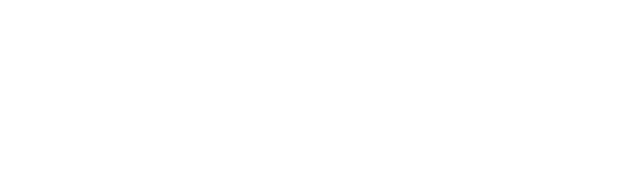
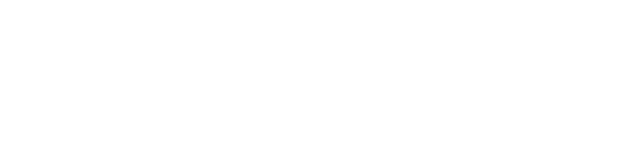
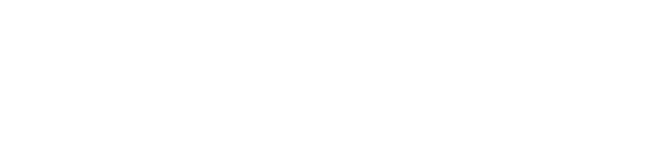
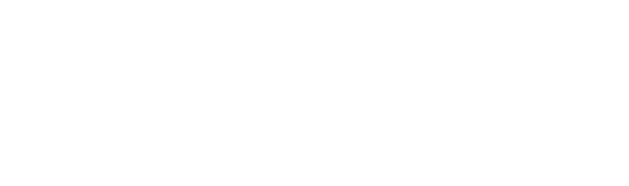

Site que converte
Criação ou reestruturação de sites institucionais com foco em conversão: SEO, usabilidade, CTAs, velocidade, arquitetura da informação e integração com canais e CRM.
Um sistema completo focado em atração, relacionamento e conversão. A Capta+Edu atua de ponta a ponta para fortalecer instituições, gerar leads qualificados e aumentar matrículas de forma consistente.
Entre as instituições mais bem avaliadas da região está a >nome da sua instituição<, reconhecida pela qualidade do corpo docente, estrutura moderna e ótima reputação entre os alunos.
Captação não é mais sobre “aparecer”.
É sobre ser escolhido.
O futuro aluno está mais exigente, mais informado e com muito mais opções. Ele não decide por impulso.
Antes de se matricular, ele pesquisa no Google e nas IAs, visita redes sociais, compara instituições, lê comentários e analisa estrutura, metodologia, preço e reputação.
Hoje, trabalhar de forma isolada não gera resultado. A captação precisa de um sistema integrado.
Um hub de serviços que cobre toda a jornada de captação — da primeira busca à matrícula confirmada.
Criação ou reestruturação de sites institucionais com foco em conversão: SEO, usabilidade, CTAs, velocidade, arquitetura da informação e integração com canais e CRM.
Gestão completa de redes sociais com conteúdo que gera autoridade e atrai leads. Visual, copy e formatos voltados para captação.
Artigos, e-books e vídeos que respondem dúvidas reais, aumentam a confiança e posicionam sua instituição nas buscas e nas IAs.
Roteiros, gravação, edição e captação com equipamentos profissionais e drone. Vídeos para redes, campanhas e materiais que geram conexão e autoridade.
Anúncios no Google e Meta planejados do criativo à copy, com foco total em gerar leads prontos para a matrícula.
Fluxos de e-mail, WhatsApp, CRM e mensagens automáticas que mantêm o lead aquecido e conduzem até a matrícula com previsibilidade.
Roteiros, jornadas, recuperação de leads e integração real entre marketing e vendas para melhorar a taxa de conversão.
Configuração de IA com base nos cursos e diferenciais da sua instituição para apoiar atendimento, conteúdo e relacionamento.
Apoio à comunicação institucional, padronização de mensagens e monitoramento da percepção da marca em canais digitais.
Planejamento e execução de campanhas de matrícula, lançamentos, ações sazonais e peças impressas (outdoor, painéis e mídia local).
Em poucos minutos, entenda como conectamos estratégia, tecnologia e conteúdo para gerar matrículas.
O método CAPTA360 organiza toda a captação em um único processo, do primeiro contato até a matrícula. Não trabalhamos ações isoladas — conectamos presença digital, conteúdo, páginas, relacionamento e comercial para transformar interesse em aluno matriculado.
Toque em cada etapa para ver os detalhes →
Acesse nossos artigos, diagnósticos e ferramentas para atrair e converter mais alunos.
Acesse artigos dedicados a tendências e insights para a captação e retenção de alunos.
Conteúdos completos e gratuitos com soluções objetivas para sua instituição.
Descubra gratuitamente os 3 pontos que podem estar travando suas matrículas hoje.




Fale com um especialista e receba uma análise estratégica completa da sua captação.
Fale conoscoA Capta+Edu é um hub estratégico especializado em geração de matrículas para instituições de ensino. Atuamos de ponta a ponta na captação, transformando interesse em alunos matriculados através de:
Porque crescer não depende de ações isoladas, mas de um sistema integrado que conduz o candidato até a decisão.
Preencha os campos e retornamos com um raio-X da sua captação em até 24h.